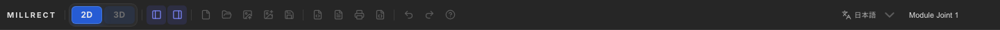
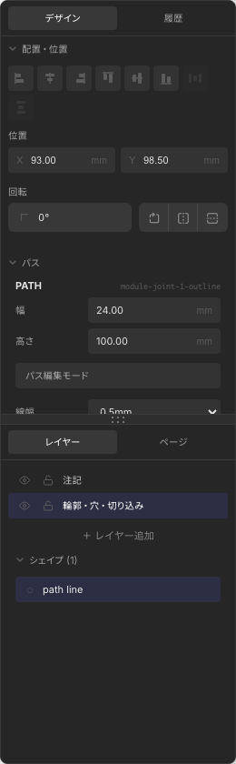
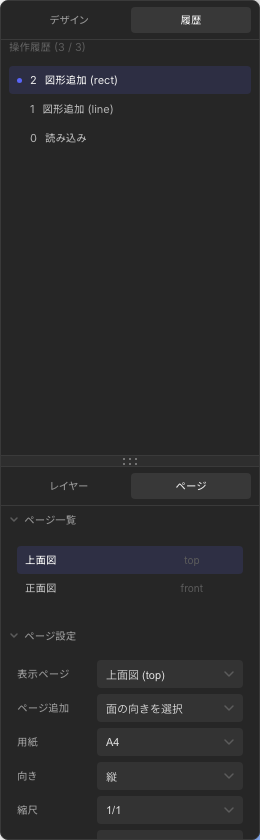

画面構成
Millrect の画面は、上部のツールバーとプロジェクトタブ、左のツールパレット、中央のキャンバス、右の管理パネル、 下部のステータスバーで構成されています。

ツールバー（上部）

| ボタン | 機能 | ショートカット |
|---|---|---|
| 新規 / 開く / 保存 | プロジェクトの作成・読み込み・保存 | Ctrl+N / Ctrl+S |
| SVG インポート | 外部 SVG を現在のページに取り込む | — |
| 画像配置 | PNG / JPEG / WebP / SVG を選択可能な画像オブジェクトとしてキャンバスに配置 | — |
| SVG / PDF / JSON 出力 | 図面やプロジェクトをファイルに書き出す | — |
| 2D / 3D | 2D 作図画面と、現在の図面から生成する 3D プレビューを切り替える | — |
| Undo / Redo | 図形操作の元に戻す / やり直す | Ctrl+Z / Ctrl+Y |
| 左 / 右パネル | サイドパネルの表示切替 | — |
macOS では Ctrl の代わりに Cmd キーを使います。
プロジェクトタブ
ツールバーのすぐ下に、ブラウザのような プロジェクトタブ が並びます。 複数のプロジェクトを同時に開いておき、タブをクリックするだけで切り替えられます。
| 操作 | 説明 |
|---|---|
| タブをクリック | そのプロジェクトに切り替え |
| ＋ ボタン | 新しいタブを開く（新規作成、または保存済みプロジェクトの読み込み） |
| × ボタン / 中クリック | タブを閉じる（保留中の変更は閉じる前に自動保存） |
- 各タブの内容は自動保存され、閉じても保存済みプロジェクトとして残ります
- コピー＆ペーストはタブをまたいで使えます。あるタブでコピーした図形を別のタブに貼り付け可能です
メモリ節約のため、Undo / Redo 履歴を保持するのはアクティブなタブ 1 枚だけです。別のタブに切り替えると、元のタブの履歴はリセットされます（図面の内容は保存されたまま失われません）。
ツールパレット（左）

パレットは画面上の好きな位置にドラッグして移動できます。選択ツール以外にも、以下のツールが含まれます。
- パン — キャンバスを移動（スペースキーを押しながらドラッグでも可能）
- 矩形 / 円 / 線 — 基本図形の描画（R / C / L）
- ペン（ベジェ） — 自由な曲線・閉じた輪郭
- テキスト / 寸法線 — 注記と寸法（T / D）
キャンバス（中央）
白い用紙とグリッドが表示される作図エリアです。
- ズーム — マウスホイール、右下の +/- ボタン、または Ctrl+± / Ctrl+0
- パン — スペース + ドラッグ、または中ボタンドラッグ
- スナップ — 端点・交点などへの自動吸着（右パネル Pages タブで ON/OFF）
- ショートカット一覧 — 右下の ? ボタン（詳細）

ステータスバー右端に現在のズーム倍率（例: 339%）が表示されます。
右パネル
4 つのタブで、プロジェクトの構造と設定を管理します。




| タブ | 内容 |
|---|---|
| Layers | レイヤーの追加・表示/非表示・ロック。図形はレイヤーごとに整理されます。 |
| Pages | ページの切替・追加。ページ追加で上面/正面/側面などの面の向きを選びます。既にある面は重複追加できません。用紙・縮尺、参照画像、プロジェクトフォント、制作メモもこのタブ内。 |
| Design | 選択中の図形の座標・塗り・線色・線幅などのプロパティ編集。画像選択時は不透明度・画像容量も表示。複数選択時は外観の一括変更も可能。 |
| History | Undo / Redo 履歴の確認。 |
パネル右端をドラッグすると幅を変更できます。
参照画像（Pages タブ内）
セクション 参照画像 を開くと、スケッチや写真の下絵を読み込めます。 手順の詳細は 2D 描画 — スケッチ取り込み を参照してください。
- 画像を読み込む — PNG / JPEG / WebP をページ背景に配置
- 位置・サイズを編集 — クリックで編集開始（青ハイライト）、キャンバスで移動・リサイズ、もう一度クリックで終了（Esc や描画ツール切替でも終了）
- 不透明度 — 下絵の濃さ
- スケール校正 — 実寸がわかる線の両端をクリック + 実長 (mm) + パネル内の 適用
- ゴーストを確定 / 削除 — AI 提案図形の確定または破棄（MCP 利用時）
プロジェクトフォント（Pages タブ内）
セクション プロジェクトフォント（任意） を開くと、Google Fonts の追加 UI が表示されます。 詳細は 2D 描画 — プロジェクトフォント を参照してください。
- フォントを探す… — Fontsource カタログから検索（PC インストールフォントではない）
- このプロジェクト — 現在のプロジェクト JSON に含まれるフォント一覧
- ライブラリ — アプリ全体で再利用する登録済みフォント（＋ でプロジェクトへ追加）
制作メモ（Pages タブ内）

制作メモ は、AI/MCP が参照する projectBrief の状態を表示するセクションです。
ページ設定・参照画像・フォントと同じ Pages タブに置くことで、図面全体に関わる文脈をページ管理と一緒に確認できます。
- 意図 — 何を作るか、何を優先するか
- 設計原則 — そのプロジェクト内で守る判断基準
- 制作前に方針を必須にする — Part DSL 生成前に brief を要求するガード
3D プレビューパネル

上面図と正面図など、2 軸以上のページが揃っていると立体が表示されます。 図形の塗り色は 3D メッシュの表示色に反映されます（色の反映）。 ビューが足りない場合は、必要なページを追加するための案内メッセージが表示されます。 3D ボタンを押した直後は先にプレビュー画面へ切り替わり、生成が終わるとメッシュが表示されます。
ステータスバー（下部）
キャンバス下部の細いバーに、次の情報が表示されます。
- XY — カーソル位置（mm）
- TOOL — 現在のツール名
- SCALE — ページの縮尺
- ZOOM — 表示倍率
- 保存済 — 自動保存の状態
作図に集中するときは左右パネルを非表示にしてキャンバスを広げ、 3D 確認時だけ 3D プレビューを開くと効率的です。